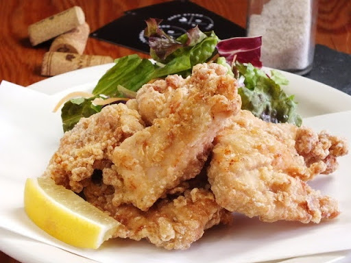
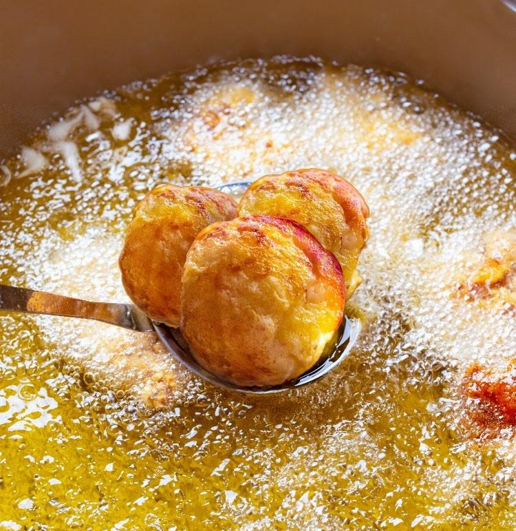
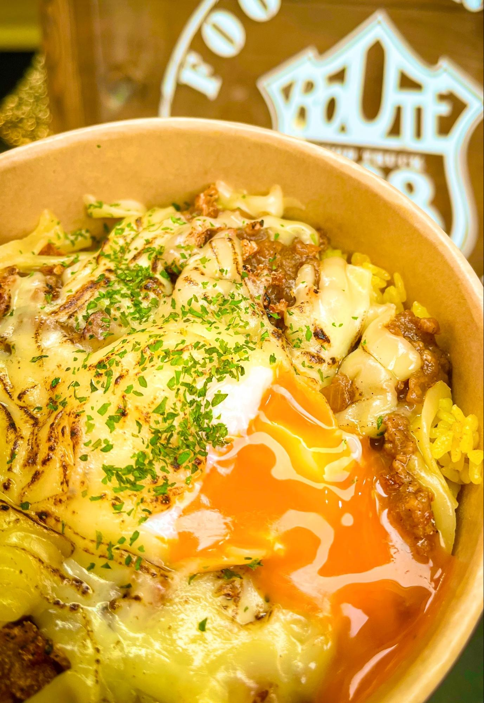
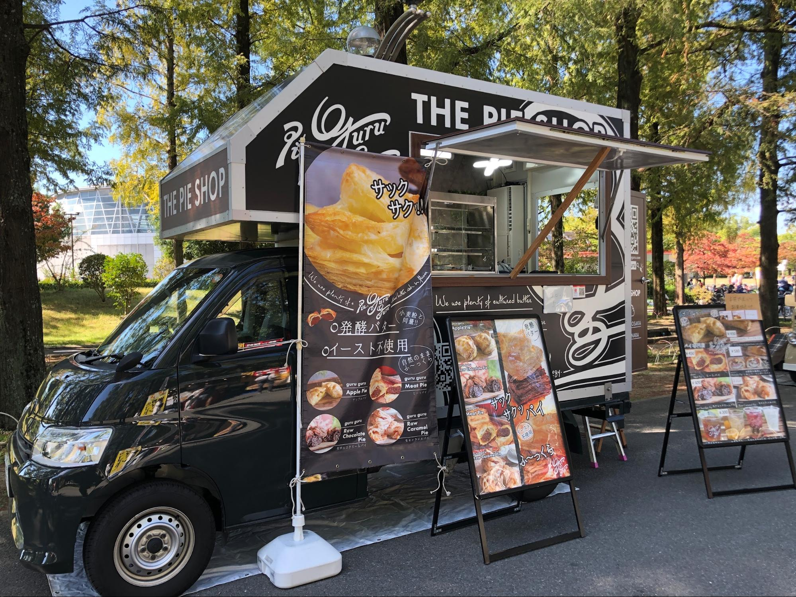
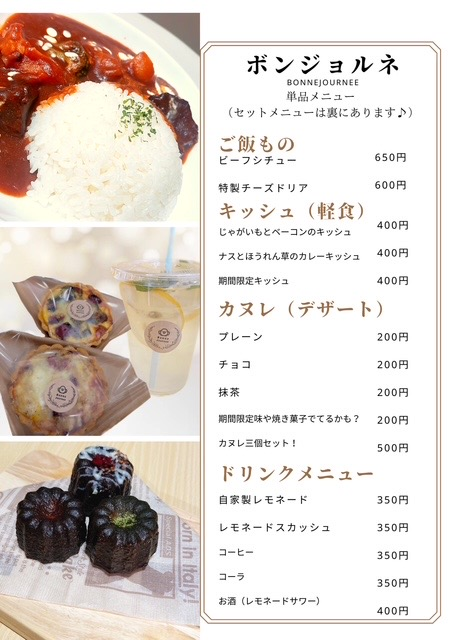

食販一覧
-

- TORIKARA STAND
- カラダとココロにやさしいからあげ
出店日：5/15.16
-

- じんべい
- 外カリ中トロ！アツアツ揚げたこ焼きうますぎ注意！
出店日：5/15.16
-

- Rocotty cafe
- 豆乳をミックスした焼きたてワッフルに大きめフランクフルト、キャロットラべ、とろけるチーズ、片手で食べるホットスナック。
出店日：5/15.16
-

- Goo CHOICE33
- りんご飴は国産の甘い大きなりんごに飴をコーティングしました。
出店日：5/15.16
-

- ROUTE908
- 甘さとコクが際立つ辛さ控えめの優しいキーマカレーです
出店日：5/15.16
-

- Pieguruguru
- パイ専門店Pieguruguruのキッチンカーにて焼きたてパイをご賞味下さい
出店日：5/15.16
-

- MAG CAT CAFE
- もちもち生地にたっぷりのクリームと手作りの猫クッキー付きです♪
出店日：5/15.16
-

- ボンジョルネ
- 焼きたてカヌレ、ランチメニューはビーフシチュー提供してます♪
出店日：5/15